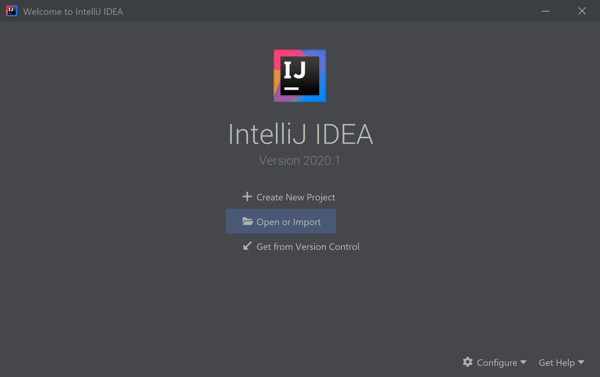
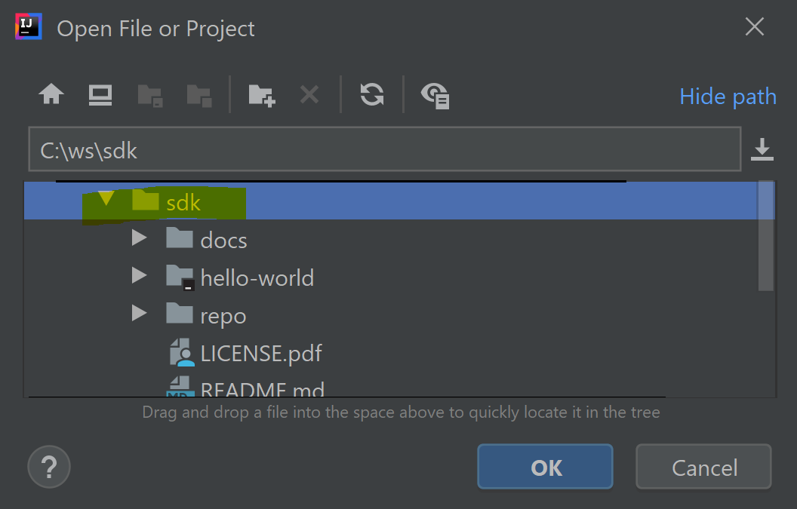
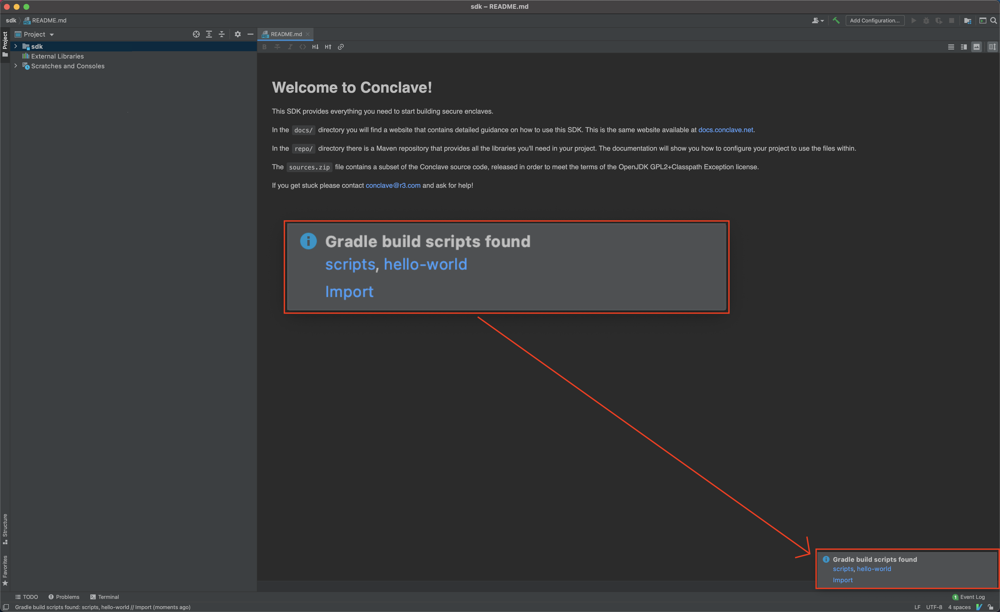
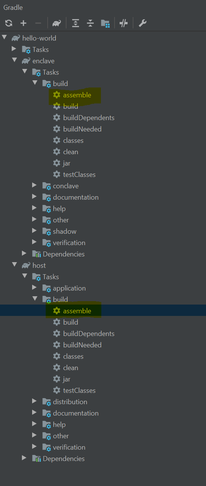

Compiling and Running your First Enclave¶
Important
- You need the Conclave SDK. If you don't have it, grab a copy from conclave.net.
- This tutorial assumes you've read and understood the conceptual overview and architecture overview.
You can find a sample app in the hello-world directory of your SDK. You can use this app as a template
for your own if you want a quick start. We will cover:
- How to set up your machine.
- How to compile and run the sample app.
- How to write the sample app.
Enclave modes¶
SGX enclaves can be used in one of four modes, in order of increasing realism:
- Mock: your enclave class is created in the host JVM and no native or SGX specific code is used. This provides a pure Java development experience.
- Simulation: an enclave is compiled to native machine code and loaded, but SGX hardware doesn't need to be present.
- Debug: the enclave is loaded using SGX hardware and drivers, but with a back door that allows debugger access to the memory.
- Release: the enclave is loaded using SGX hardware and drivers, and there's no back door. This is the real deal.
Only release mode locks out the host and provides the standard SGX security model.
Setting up your machine¶
For this tutorial you will need Java 8 or 11 (your choice). If you use IntelliJ IDEA the IDE can download both a JDK and the Gradle build system for you, so you don't need anything to get started except the IDE itself (the free Community Edition works fine).
Currently, we support developing enclaves on Windows, macOS and Linux. However, there are a few platform specific differences to be aware of.
Firstly, you need a Linux environment to build and execute enclaves, including for native testing. This is because enclaves are Linux shared libraries with special extensions. If you are not using Linux you will need to install Docker. On Windows and macOS, Conclave uses Docker to build the enclave in a Linux environment. Instructions are provided below to show you how to use Docker on Windows and macOS to run your entire application in "simulation mode". Alternatively, for day to day development building an enclave in mock mode is plenty sufficient and allows you to debug into enclave calls as well. Compiling a real enclave is only needed for integration testing against the embedded JVM, or real deployment.
Secondly, when building enclaves Conclave internally uses the C++ compiler gcc. This is automatically installed when building on Windows and macOS but on Linux you need to make sure you have installed gcc yourself. If your build system uses the aptitude package manager then you can install everything you need with this command:
1 | |
Enclaves can run in simulation mode without requiring any special setup of Linux or SGX capable hardware. However you of course get no hardware protections. To run against real SGX hardware you must perform some additional machine setup.
Compiling the sample enclave¶
Step 1: Import the project

Step 2: Look at the Conclave SDK's top level directory

Step 3: When notified that there's a Gradle build script, click "hello-world" to import the project.

Step 4: Double-click on :host:assemble. This is the second
highlighted assemble in the screenshot of Intellij's Gradle window below. Voila!  You have just built your first enclave.
You have just built your first enclave.

Now explore the build folder.

As normal with Gradle, the assemble task has bundled the program into a zip, with startup scripts. These scripts are
nothing special - they just set up the classpath. You could also e.g. make a fat JAR if you want.
Alternatively you can build you application from the command line as described in the next section.
Selecting your mode¶
In the sample app, the assemble task will build the app for simulation mode by default.
Use the -PenclaveMode argument to configure the mode.
If you are using SGX hardware, you can build the app for debug mode with the command:
1 | |
If working from inside IntelliJ, start the assemble task for the host project from the tree on the right hand side,
and then edit the created run config. Add the -PenclaveMode=debug flag to the arguments section of the run config.
If you want to debug into the enclave, or you are running on an OS other than Linux then you can build the app for mock mode with the command:
1 | |
For release mode, the sample app has been configured (in the build.gradle of the enclave subproject) to use external
signing. This means it must be built in multiple stages:
Note
See Enclave signing for more information.
1 2 3 4 5 6 7 8 | |
Got this far? Join the community!¶
There's a public mailing list for discussion of using Conclave and we also welcome general SGX talk. A Slack channel is available where you can find the development team during UK office hours (GMT 0900-1700).
Join conclave-discuss@groups.io Email us directly Slack us in #conclave
Confused about various Gradle commands (build/assemble/installDist/run)? Here is an explanation.¶
build will build a client, an enclave and a host. This command will also run unit tests (if there are any) for the corresponding components.
The build results will go to client/build/distribution/client.tar (or .zip) for the client,
and to host/build/distribution/host.tar (or .zip) for the host (an enclave is bundled with the host).
These archives contain everything required to run your app (except the JRE) and can be shipped to the customer as-is.
1 | |
assemble will do the same job as build except that it won't run unit tests. You can assemble all at once or do it separately for the client and for the host.
1 | |
1 2 | |
installDist will behave similarly to assemble except that unlike build or assemble, it won't produce the archive files.
Instead, it will create a host/build/install and client/build/install directories, whose contents are effectively unpacked host.tar and/or client.tar files.
1 | |
1 2 | |
On Linux you can run your app in two slightly different ways - standalone or using Gradle:
-
Standalone
1 2 3
./gradlew host:installDist cd host/build/install ./host/bin/host1 2 3
./gradlew client:installDist cd client/build/install ./client/bin/client -
Using Gradle
1./gradlew :host:run1./gradlew :client:run --args="Reverse me"
Note
The run task is a part of the Application plugin.
Running the host¶
Just run the host app like any app - no special customisation or setup is required with Conclave! Here we will run a shell script generated by Gradle that starts the JVM:
1 2 3 | |
Gradle can also create .tar.gz files suitable for copying to the Linux host, fat JARs, WAR files for deployment into
servlet containers and various other ways to deploy your app.
Note
At this time using the JPMS tool jlink is not tested.
On macOS there is a script that lets you run Gradle (and by extension anything it runs) inside a Linux environment based on the Conclave build container. It wraps Docker and makes it simpler to work with.
Just use the ../scripts/container-gradle script as a replacement for gradlew. You might want to add it to your
$PATH variable. To run the host, use this command:
1 | |
For more information see the Container Gradle page.
Tip
Don't be surprised if the application gets built again from scratch! We do this to ensure the build and runtime environments match.
On Windows you can still test locally in simulation mode using a Docker container. However you may need to configure
mounts and other parameters yourself. Refer to the scripts/container-gradle file to see how this is done on macOS.
Windows PowerShell
1 2 | |
This will build the app on your Windows machine, then mount the app into a Linux container and get a shell. Next, run the app from within the container:
1 2 | |
Tip
Please consult the Docker reference manual to understand
what switches you can pass to the docker run command.
If your Linux machine (or container) doesn't have SGX, you should see something like the following. Don't worry, you can still complete the tutorial because we are using simulation mode:
1 | |
You can proceed to Running the client when you see the following:
1 | |
IntelliJ configuration¶
If you are using IntelliJ, you may want to create a launch configuration to incorporate the build and deploy stages. If using the
container-gradle script on macOS, IntelliJ does expect the command to launch Gradle to be called gradle or gradlew.
What you can do is rename gradlew to something else, then copy the scripts/container-gradle script to be called
gradlew in your project root. Finally, edit the last line of the script to start the renamed script. Therefore
IntelliJ will run the container-gradle script whilst thinking it's running normal Gradle.
Running the client¶
The host has opened up a TCP port which will now listen for requests from remote clients. So, let's run the client app:
1 | |
1 | |
Tip
Docker is only required to run the host on macOS or windows. The client can be run without Docker.
The host will load the enclave, obtain its remote attestation (the EnclaveInstanceInfo object), print it out,
and ask the enclave to reverse a string. You should see the following output from the host:
1 2 3 4 5 6 7 8 9 10 11 12 | |
The client will connect to the host, download the EnclaveInstanceInfo, check it, print it out, and then send an encrypted string to reverse. The host will deliver this encrypted string to the enclave,
and the enclave will send back an encrypted response as a PostMail command. The host will extract an encrypted data from the PostMail command and send it to the client. You should see the following output from the client:
1 2 3 4 5 6 7 8 9 10 11 12 13 14 | |
Finally, the host and the client will exit.
Try this:
1 | |
1 | |
Tip
Aibohphobia is the fear of palindromes.
If you get stuck join the mailing list and ask for help!